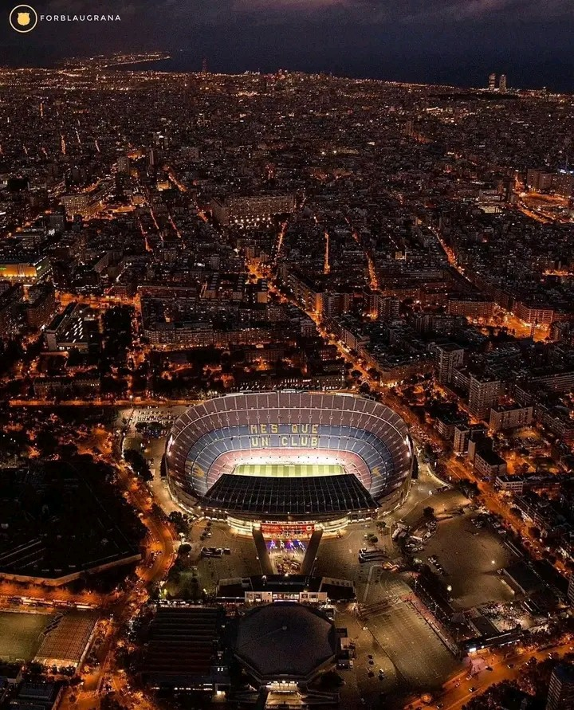

The History of FC Barcelona

History of FC Barcelona: A Brief Summary
Foundation and Early Years (1899-1929)
FC Barcelona was founded on November 29, 1899, by a group led by Swiss businessman Joan Gamper...
Civil War and Struggles (1930s-1940s)
During the Spanish Civil War (1936-1939), Barcelona suffered greatly...
Kubala Era and Rising Success (1950s-1960s)
The arrival of László Kubala in 1950 transformed the club...
Cruyff Revolution (1970s-1980s)
In 1973, Johan Cruyff joined Barcelona as a player...
Ronaldinho & Messi Era (2000s–2020s)
After years of struggles, Ronaldinho’s arrival in 2003 reignited Barça’s greatness...
Legacy
FC Barcelona remains one of the greatest football clubs in history...
SPOTIFY CAMP NOU
we are more than a club!!!!!!